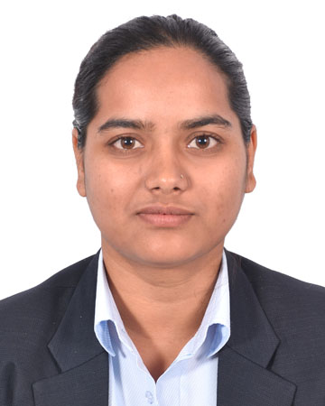

Studies Computer Engineering— learning data science, machine learning and NLP, one step at a time
I'm very good at my academics. But now its time do some research. I'm looking for a structured, mentored PhD program that can guide me on becoming a researcher
01 — Abstract
I have completed my Master Degree in Computer Engineering in Data Science and Analytics. My thesis was on Neplali texts summarization, which is a low resource language. My project work was on Loan Default Prediction using Machine Learning Tecniques.
02 — Interests
My thesis worked with transformer architectures for Nepali — a language with little existing NLP tooling. It's the area I understand best, and the one I'd want to explore first.
Boosting and ensemble methods for credit risk and default prediction — hands-on work, not deep theory, but it's where I first got comfortable with a full modelling pipeline.
Earlier coursework applying CNN architectures (AlexNet, VGG-16) to diagnostic imaging — malaria and blood cancer detection.
I know the know-hows — Python, PyTorch, TensorFlow — but I don't consider myself an expert with any of them yet. That's exactly what I'm hoping a structured, mentored program will change.
03 — Record
NepaliBART: Nepali Text Summarization using BART Transformer
Fine-tuned a BART-based transformer for abstractive summarization of Nepali text, addressing the shortage of NLP tooling for the language.
Enhancing Default Prediction using Boosting-based ML Techniques
Compared boosting algorithms for loan default prediction. Read the paper ↗
Comparison of ML Algorithms for Loan Default Prediction using SMOTE
Evaluated SMOTE-based resampling against class imbalance in credit default datasets. View poster ↗
Malaria Detection and Performance Evaluation using AlexNet and VGG-16
Benchmarked two CNN architectures for automated malaria detection from blood smear images.
Blood Cancer Detection using Image Processing
Image-processing pipeline for detecting blood cancer indicators, presented as a poster at the SET conference. View poster ↗
04 — Record
Master of Public Administration, Tribhuvan University
A second degree, pursued alongside full-time work — not part of my computer science research direction. Thesis: internet user satisfaction at Nepal Telecom.
M.Sc. Computer Engineering, Tribhuvan University
Specialization in Data Science and Analytics. Thesis: "NepaliBART," supervised by Dr. Arun Kumar Timalsina. Grade: 87.27%.
Bachelor's Degree, Computer Engineering
Tribhuvan University. Project: malaria detection using AlexNet and VGG-16. Grade: 73.72%.
05 — Work
Computer Engineer, Nepal Telecom (Nepal Doorsanchar Company Ltd.)
Recruited via the Public Service Commission's competitive exam (ranked 7th). Work spans SIEM, the email system, AAA services, and second-line FTTH support.
Computer Engineer, Government of Nepal
Recruited via the Public Service Commission's competitive exam (ranked 6th). Worked in the Public Procurement Monitoring Office on the e-government procurement system.
06 — Toolkit
Comfortable, not expert — I can build and debug a working pipeline.
Used across my thesis work and applied ML projects.
Listening 8.5 · Reading 8.5 · Speaking 7 · Writing 6.5
Institute of Engineering, Pulchowk Campus.
07 — Off the Record
When I'm not at a desk, I like listening to music and travelling around Nepal. It's a small country, but a varied one — you can go from Kathmandu's temples to hill villages to the Himalaya foothills in the space of a few hours' drive. If a PhD ever takes me abroad, this is the part I'll miss most. And if you ever get the chance to visit Nepal, take it — it really is a beautiful country, and the people are as much a reason to come as the mountains are.
08 — Record
Short courses and training completed alongside my degrees and work.
09 — Looking Ahead
I'm not applying because I already have a five-year research plan. I'm applying because I want to be mentored, taught, and pushed properly, somewhere that takes early-career researchers seriously. There isn't much room to do that in Nepal right now, and I want to change that for myself.
I'm drawn to structured PhD programs in Germany that begin with coursework and supervised exploration before you have to commit to a specific project — because that matches where I actually am: trained, willing, curious, but still learning how to think like a researcher, not someone arriving with a finished proposal.
I don't come from a family with an academic or technical background. Everything so far — the degrees, the exam ranks, the scholarship — I've earned through my own effort, without a model to follow. I'm not trying to sound impressive. I want to grow, become a genuinely skilled worker in this field, and I think a structured, mentored PhD is the most honest way for me to get there.
10 — Correspondence
Open to conversations about mentorship, structured PhD programs, or just about Nepal's data science scene.